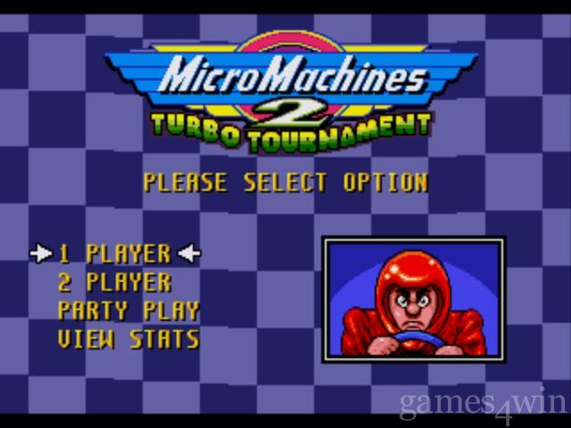
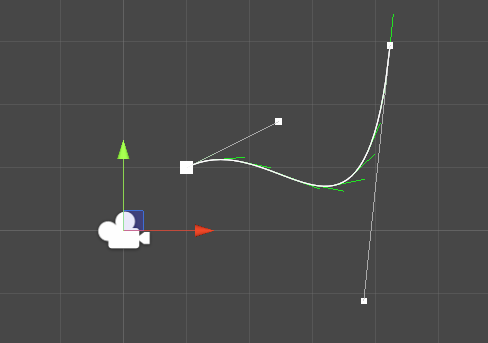
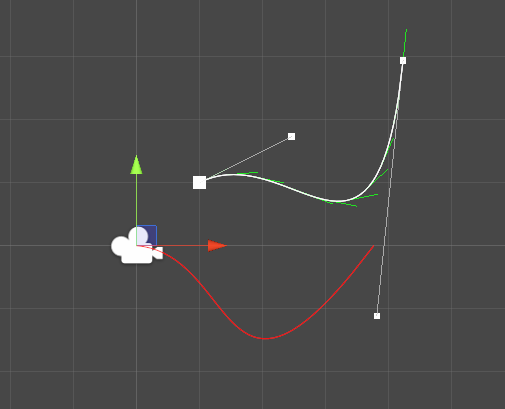
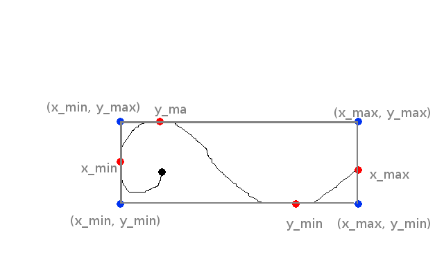
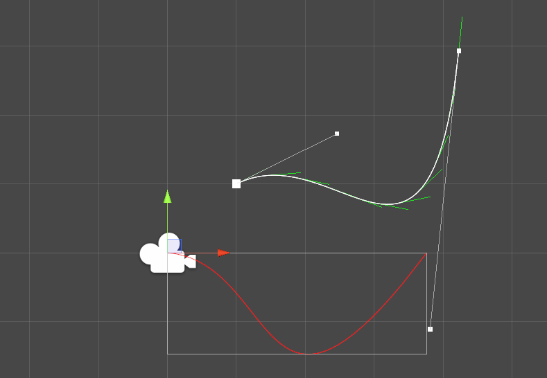
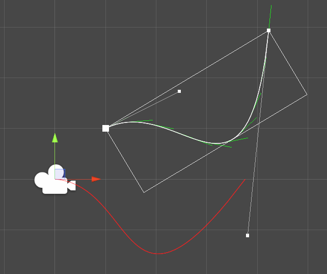

Bezier curve in Unity: Bounding boxes

Instead of the common FPS/RPG/Platformer, for some reason I decide to create a clone of the old micromachine, in particular the elimination mode when players are eliminated when they are too far away from the first player.
As the game was creating itself in my head, I stumbled against a mathematical obstacle in the first week of prototyping. How to determine which player is the first? How to determinate what path the AI should follow.
It turns out that part of the answer is to represent tracks as a curve, and Bezier curves are used in a bunch of applications from photoshop to font creation. To find out what player is first, I would just have to calculate the position of all pilots on the tracks.
Some reading before getting started
This article will be introducing a bit a linear algebra. In particular, we will apply translation and rotation to our vectors. Also, we need to find the roots of a quadratic equation. The maths are not too complicated but feel free to read the following links beforehand:
- Wikipedia article on finding the roots of a quadratic formula
- Description of translation, rotation and their combinaison
This article builds on an existing article which can be found here: https://catlikecoding.com/unity/tutorials/curves-and-splines/ It shows how to implement a Bezier curve in Unity, showing at the same time how editor scripts work.
The last resource is an ebook called "A primer on Bezier". It can be found here. This ebook contains all you need to know about Bezier curves, theory and pseudocode included.

Bounding box
Bounding box are useful. In my use case, I want to find the closest point to the spline so bounding boxes will help determine what bezier curve I should select to do the calculation!
The way to find the bounding box is to get the minimim/maximum along the x and y axis and create the boxes from (xmin, ymin), (xmin, ymax), (xmax, ymin), (xmax, ymax).
However, this has the tendency to create large bounding boxes so we can get tighter boxes by aligning them along our curve. (Part 17 - Bounding box)
Beforehand, define the curve
Curve is such as
\begin{equation} B(t) = (1-t)^3P_0 + 3(1-t)^2tP_1 + 3(1-t)t^2P_2 + t^3P_3 \end{equation}where \(P_0, P_1, P_2, P_3\) are the control points of the curve, in global coordinates.
Align the curve on an axis.
To align the curve, we first need to apply a translation T to the first point of the curve in order to place it on the origin (0, 0). We have \(T = -P_0\).
zsh:1: command not found: pygmentizeThen, we need to apply the rotation so that \(P_3\) is on the x-axis. Given x and y the coordinates of \(P_3\), x' and y' the coordinates after rotation \(\theta\), we have the equations:
\begin{equation} x' = xcos(theta) - ysin(theta) y' = ycos(theta) + x sin(theta) \end{equation}Don't take my word for granted :)
zsh:1: command not found: pygmentizeWe find theta such as \(y' = 0\).
\begin{equation} \theta = atan(-y/x) \end{equation} zsh:1: command not found: pygmentizeJust for fun, let's draw the Bezier curve after rotation.
zsh:1: command not found: pygmentizeWhen adding the aligned curve to the editor script, we get the following.

Find the bounding box for the aligned curve
Once we have our aligned curve, we need to find its bounding box. To do so, we need to calculate the roots of the curve for x and y in order to get the minimum and maximum on the axis for t between 0 and 1.
To get an idea about why we want the minimum and maximum of a curve, please refer to my amazing drawing. 
In this piece of art, the maximum and minimum of y are located on the curve. For x however, only the minimum x is located on the curve. The maximum is one of our control point. This is why we absolutely have to include the first and last control points when we want to find the minimum and maximum on each axis.
For a quadratic or cubic Bezier curve, it is very easy to find the minimum and maximum for each axis. The way to do it is to calculate the derivate of the curve, and find the t values for which this derivative is 0. These values are called the roots of the curve for the x or y axis. The Wikipedia article at the top of the blog article explains it more deeply.
After deriving the Bezier equation and simplifying it a bit, we obtain:
\begin{equation} 3 (-x_{p_0} + 3x_{p_1} - 3x_{p_2} + x_{p_3})t^2 + 6(x_{p_0} - 2x_{p_1} + x_{p_2})t + 3(x_{p_1} - x_{p_0}) = 0 \end{equation}Where \(x_{p_i}\) is the x coordinate of the point i. There is the same equation for y. Now that we have reduce our equation to a simple quadratic equation, the solution is textbook.
\begin{equation} a = 3(-x_{p_0} + 3x_{p_1} - 3x_{p_2} + x_{p_3}) \end{equation} \begin{equation} b = 6(x_{p_0} - 2x_{p_1} + x_{p_2}) \end{equation} \begin{equation} c = 3(x_{p_1} - x_{p_0}) \end{equation} \begin{equation} \Delta = b^2 - 4 ac \end{equation}\(\Delta\) (Delta) is the discriminant. We can find imaginary roots (that cannot be represented in our 2D space) when delta is negative, so here we are just interested about the real roots, meaning when \(\Delta >= 0\).
The two roots (which can be only one is the discriminant is 0) for the axis x are:
\begin{equation} t_1 = \frac{-b - \sqrt{\Delta}}{4ac} \end{equation} \begin{equation} t_2 = \frac{-b + \sqrt{\Delta}}{4ac} \end{equation}Notice that when \(\Delta\) is 0, \(t_1\) and \(t_2\) are the same. For our Bezier curve, we only care about parameter between 0 and 1 so the roots might not be usable. In C#, there is not much complexity. Just write down the last equations and filter the values.
zsh:1: command not found: pygmentize(You can even refactor this to do the calculation once! When reading back this code I noticed that I was a bit lazy here).
Now, our minimum and maximum along x and y would be one of the point that has a parameter t, where t is either a root, 0 or 1.
zsh:1: command not found: pygmentizeWe have our \(x_min\), \(x_max\), \(y_min\), \(y_max\). This is all we need for drawing the bounding box.

Rotate the box back
Almost there! At this point, we have the bounding box of the aligned curve. To get the aligned curve, we applied two transformations to our Bezier curve: first a translation, then a rotation. To get back to the original curve, you can simply do the inverse! First, rotate the aligned curve by the opposite of the first rotation (\(-\theta\)), then translate it by the opposite of the first translation (\(-P_0\)).
We can do the same with the bounding box, and it should fit our original Bezier curve!
With the previous minima and maxima:
zsh:1: command not found: pygmentizeWhich gives us, at last:

What's next?
All this to find the bounding boxes of each curve in our Bezier spline! While it looks like a lot of work, these bounding boxes are really going to help us find the projection of a point on the spline.
Instead of having to consider all the spline, now we can just reduce the problem to a list of Bezier curves. Calculating distance to a box is pretty simple, so we just need to find the closest boxes to our point and for each curve, finding the closest point. This will be done by an iterative approach (mathematical approach is out of the question here - spoiler alert), so keep tuned for the next article.
Comments
Comments powered by Disqus